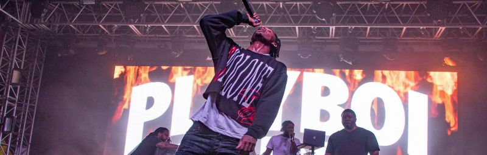
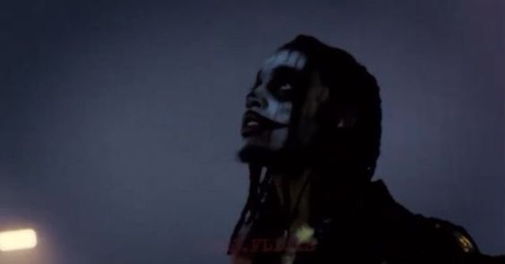
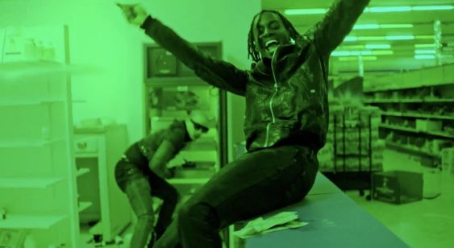

Whole Lotta Red
Whole Lotta Red é o segundo álbum de estúdio do rapper americano Playboi Carti. Foi lançado em 25 de dezembro de 2020, pela Interscope Records, bem como pelo selo do rapper A$AP Rocky: AWGE. O álbum começou a ser trabalhado no final de 2018 e terminou em novembro de 2020. O álbum é composto por 24 faixas e conta com participações especiais de Kanye West, Kid Cudi e Future. O álbum foi produzido por West, que também canta na música "Go2DaMoon". A produção também foi conduzida pelo colaborador frequente e produtor de Carti, Pi'erre Bourne, juntamente com Maaly Raw e Wheezy, entre outros.
Composição
Whole Lotta Red traz Playboi Carti exibindo "uma profundidade única que se desenvolveu desde o lançamento de Die Lit, com ele minimizando o uso de sua "voz de bebê". Em vez disso, como observado por Nicolaus Li do Hypebeast, o álbum contém um "estilo vocal frenético que define Whole Lotta Red".[18] Latesha Harris, da NPR, também observou como Carti troca sua "voz de bebê" por um som mais agressivo, já que ele continua com seu som sobrenatural característico. Ele opta por não ser um letrista tradicional e, em vez disso atua como um maestro. Seus compassos saltam entre batidas sintetizadas e fraturadas de vários produtores, o resultado final mostra o quão confortável ele está seguindo a linha entre o fascinante e o repetitivo."[18]
Crítica
Whole Lotta Red recebeu críticas positivas dos críticos de música. O álbum estreou no topo da Billboard 200 dos EUA, vendendo 100.000 unidades equivalentes a álbuns, das quais 10.000 foram vendas puras, tornando-se o primeiro álbum número um de Carti. Foi eleito o melhor álbum de 2021 pela Rolling Stone e o melhor álbum de hip hop de 2021 pelo jornal americano The Washington Post.O álbum foi eleito o melhor álbum de 2021 pelo jornal americano The Washington Post[3] e melhor álbum de hip hop de 2021 pela revista Rolling Stone.
